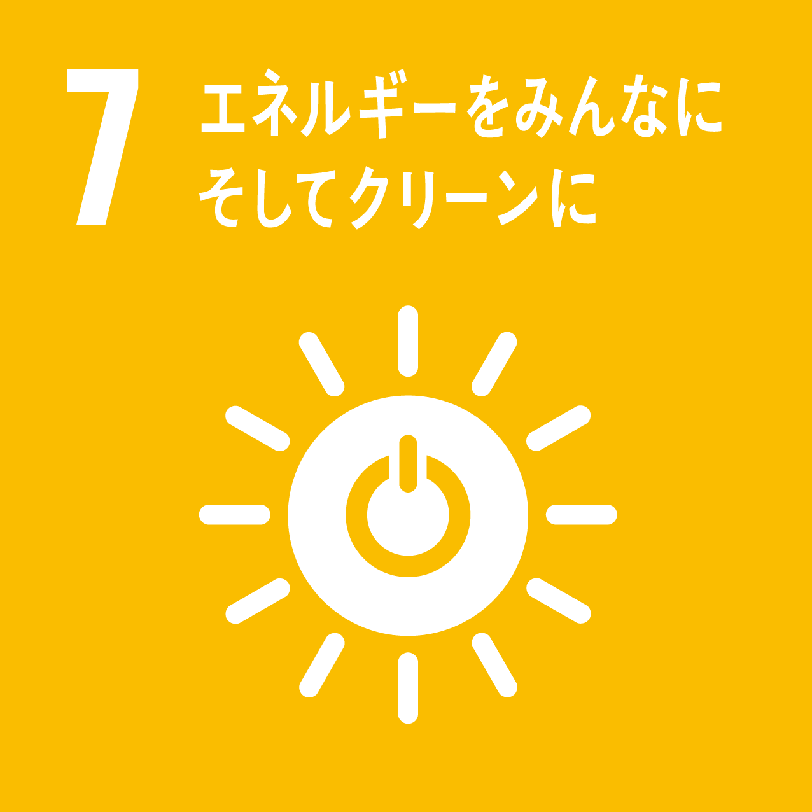

現在主流な宇宙へ行く手段であるロケットは、重量の大半を燃料が占めています。しかし、 宇宙エレベーターはロケットなどと違い電気で動きます。そのため、外部からの給電などの手法を採ることが出来、 重量を減らすことが出来ます。機体重量が少ない分宇宙にでるまでのエ ネルギーがロケットなどに比べ少ないことも魅力のひとつです。また、 ソーラーパネルを使った電力発電についても注目がされています。宇宙エ レベーターにソーラーパネルを取り付ければ、宇宙空間で運用するという 特徴から地上と違い天候を気にせず、より太陽に近い位置で発電ができます 。このソーラーパネルで発電した電力を昇降機に送電したり、この発電の 余剰分を地上に送電し、人々が使う分の電気を賄えればエネルギー問題が解決します。
SDGsアワード優秀賞記念 特設ページ
SDGsアワード
昨年2022年、神奈川大学ではSDGsアワードが開催されました。 神奈川大学に所属するサークルなどが持続可能な社会に 向けた取り組みについてポスターを作成し、発表を行い ました。このページでは優秀賞を記念して、宇宙エレ ベーターとSDGsについて解説します。
KUSEPとSDGs
宇宙エレベーターだけでなく、私たち KUSEPもSDGsと関わりがあります。 私たちはものづくりサークルとして 普段から様々な部品を扱っています。 中には再利用可能な部品もあり、私た ちは積極的に再利用しています。
- 


３つのアイコン
一見宇宙エレベーターとは関係ないようにみえますが、 どれも宇宙エレベーターと関わりの深いアイコンです。
SDGs７番
SDGs９番
宇宙エレベーターには地上発着点のアース・ポートや静止 軌道上にある最大級の駅静止軌道ステーションなど様々な 施設が存在します。これらのメイン施設の他に重要な施設 として火星重力センター、月重力センターが挙げられます。 火星や月と同じ重力環境になるこれらの施設ではそれぞれ の環境を活かした実験や研究が行えます。それだけでなく 静止軌道よりも宇宙側に惑星探査や新たな資源発掘のため の施設を建設することもできます。また、一定の高さから宇宙船 を投げると、ハンマー投げと同じ様に簡単に地球の重力か ら外に出られます。これは地上から探索機などを出すより もはるかに小さいエネルギーで済み、今後の宇宙開発が一 段と楽になります。
SDGs１２番
今宇宙ではスペースデブリが問題になっています。ロケッ トの発射の際に分離されたパーツや、役目を終えた人工衛 星などが宇宙空間を漂うゴミとして問題になっています。 しかし、宇宙エレベーターはゴミを出さずに何度でも運用 できます。パーツを分離せずとも宇宙空間に発射できます。 もし故障したり、役目を終えることになっても地上に戻す ことで宇宙に放置されることを防ぎます。作って終わりで はなく、責任のある使い方ができるのが宇宙エレベーターの 利点と言えます。
私たち宇宙エレベータープロジェクトは 今後も持続可能な社会に向けた取り組みを続けていきます